시대인재
"국내 최대규모 기숙학원에 커스텀된 5대의 바리스브루"
로봇 하나로 이 모든 고민 해결!
편리하게 운영하면서 임직원들을 만족시키니까
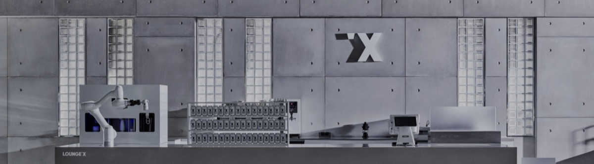
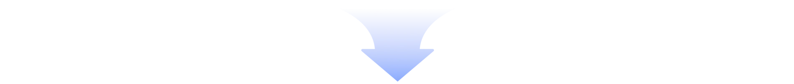
편리하게 운영하면서 임직원들 만족시키는
AI 로봇카페 for Office
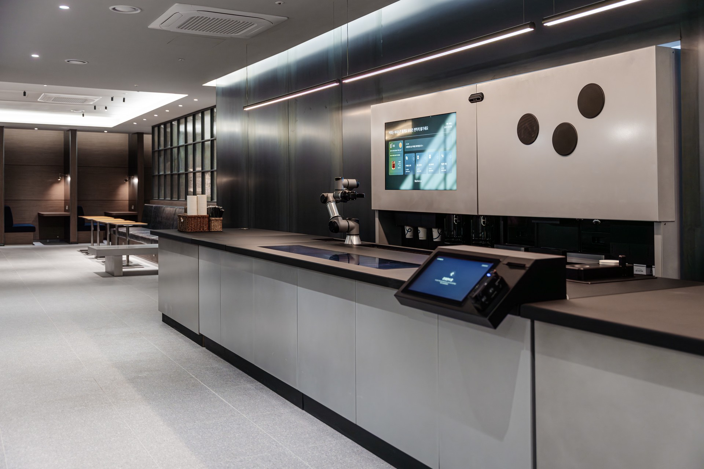
"국내 최대규모 기숙학원에 커스텀된 5대의 바리스브루"
"프리랜서까지 시간 제약 없이 사용할 수 있어 높은 만족도"
"청사 분위기를 바꿔준 힙한 로봇카페"
"인력 및 서비스 품질에 대한 고민 모두 해결"
"커피 맛에 대한 만족도가 가장 큰 점이 놀라웠어요."
"내부고객 & VIP 고객의 이용을 위한 맞춤 솔루션!"
편리하게 운영하면서 임직원들 만족시키는 솔루션 키워드 A.B.C.
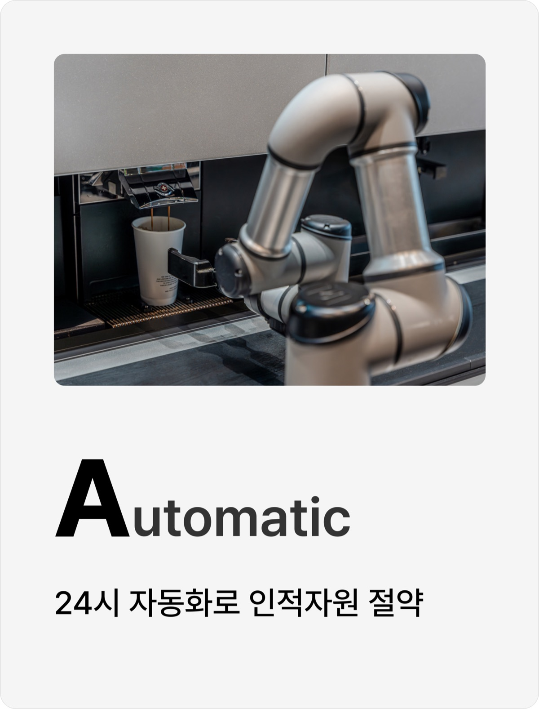
A
24시 자동화로 인적 자원 절약
직원들 소중한 시간 아끼는 로봇카페
직원들 소중한 시간 아끼는 로봇카페는 동시 제조 기술을 갖췄어요. 음료 1잔 최소 35초, 아메리카노 1잔 40초라는 업계 최고 수준의 속도를 자랑해요.
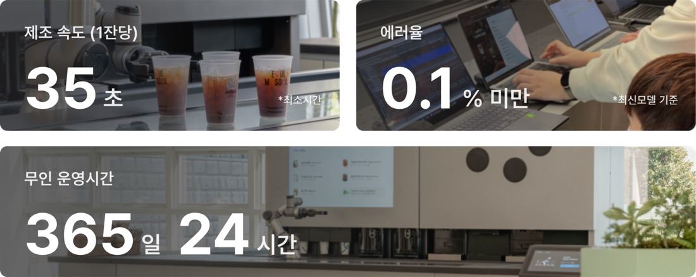
자체개발한 키오스크와 앱은 직관적인 UX/UI로 쉽게 사용할 수 있어요
*삼성페이, 애플페이, 카카오페이 등 각종 간편결제 가능
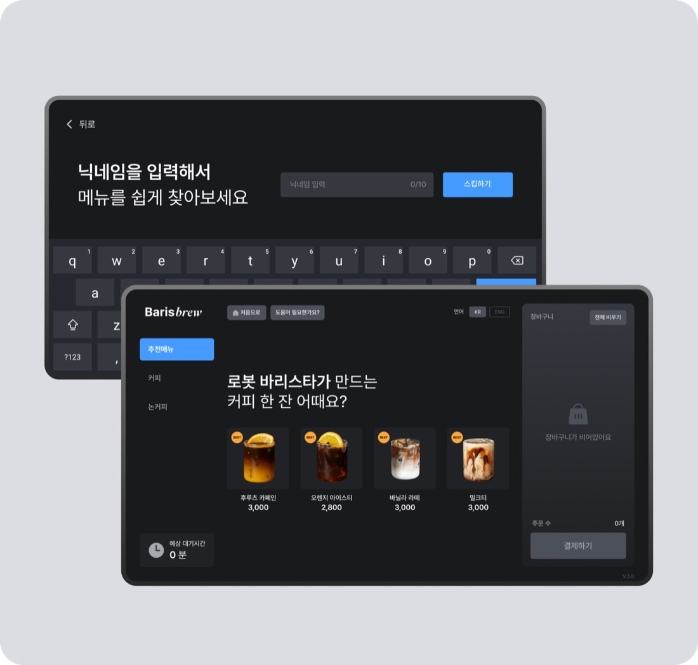
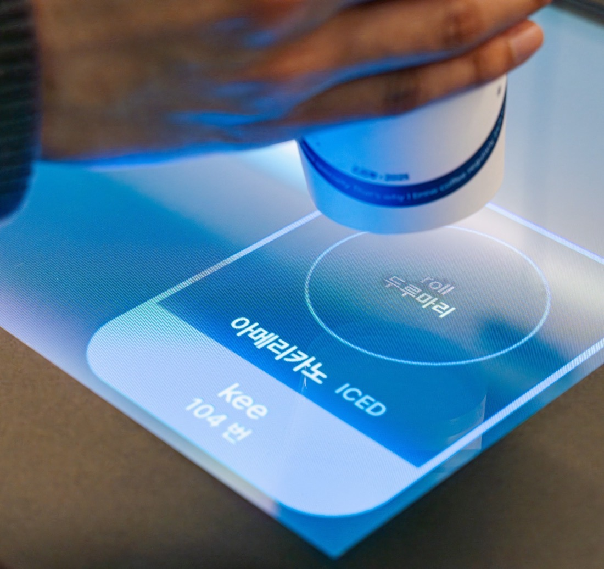
무인매장 운영 관리는 누가? 로봇카페 전문 인력이 원스톱으로 처리해요
*온라인 원격 지원 + 오프라인 방문 지원
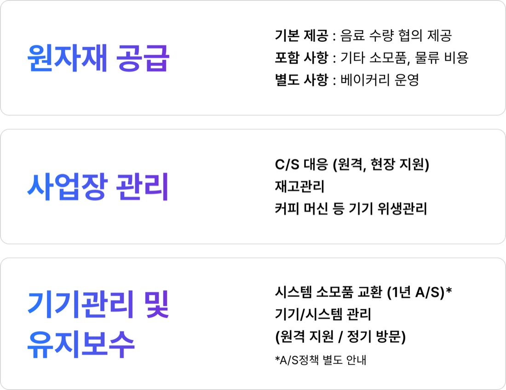
복지포인트, 임직원 할인도 결제 시스템에 적용해요
*옵션사항
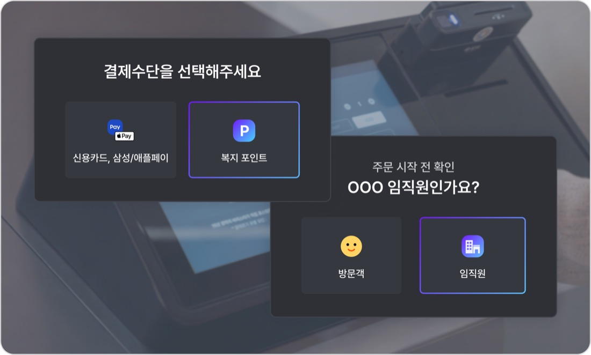
B
로봇카페 하나로 기업 브랜딩 실현
국내외로 인정받은 AI로봇 기술이 집약되어 있어요
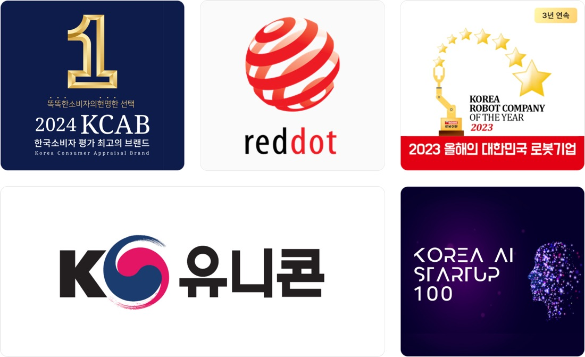
기술 특허, 디자인, 상표 50+
3평이면 충분! 모듈 형태를 통해 콤팩트한 구성과 무한한 확장이 가능해요
*인테리어 & 브랜딩 별도비용 발생
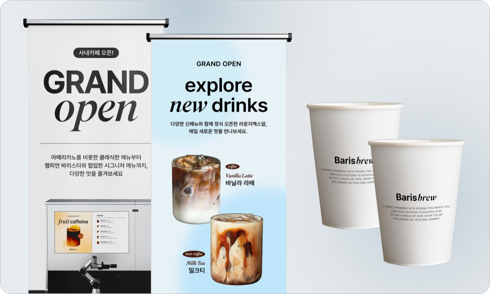
친환경은 이제 선택이 아닌 필수! 리유저블 컵 적용한 음료 제조 기술도 확보했어요
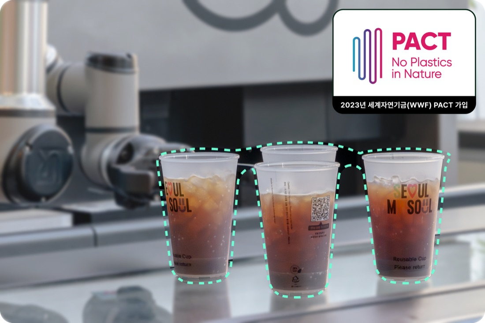
브랜드 콜라보레이션 사례
C
바리스타 챔피언의 맛 구현
사람들은 커피가 맛있는 카페를 찾아요
그럼 AI 로봇카페 for office는 어떨까요?
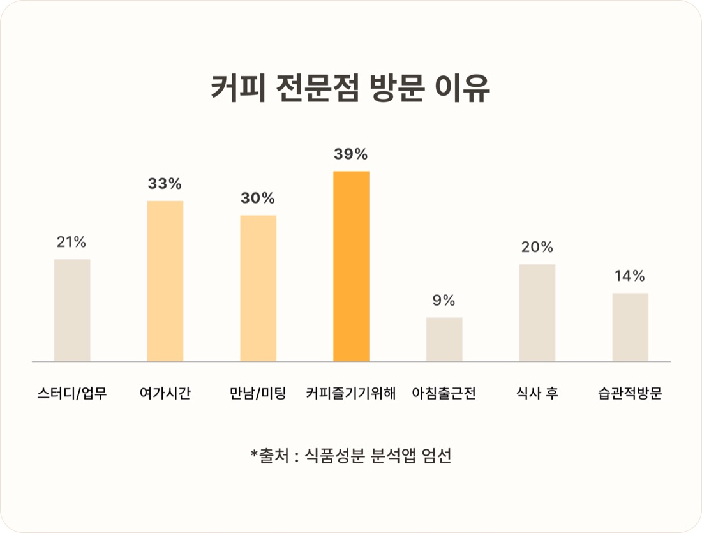
국가대표 출신의 바리스타들과 협업해 원두와 레시피를 연구하고 로봇에 적용해요
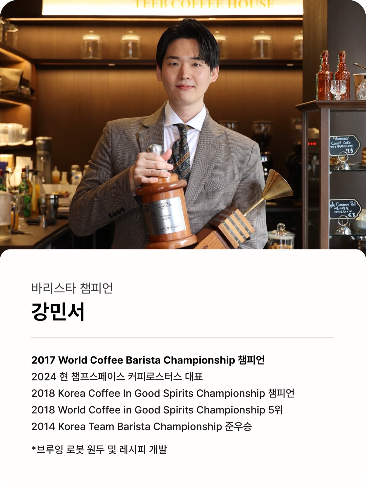
2019년 세계 최초 협동 로봇카페로 시작된 '라운지엑스'의
10개 지점 & 로스터리를 직영하여 전문성을 쌓았어요
엑스와이지의 푸드테크 역량을 바탕으로 직원들에게 폭 넓은 메뉴 선택권을 제공해요
*일부 서비스 준비 중
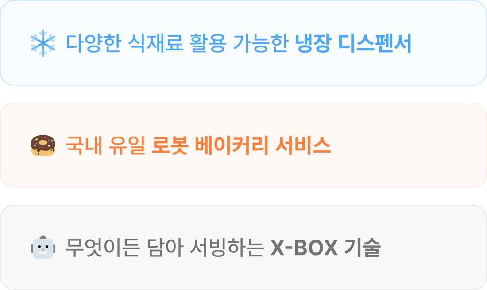
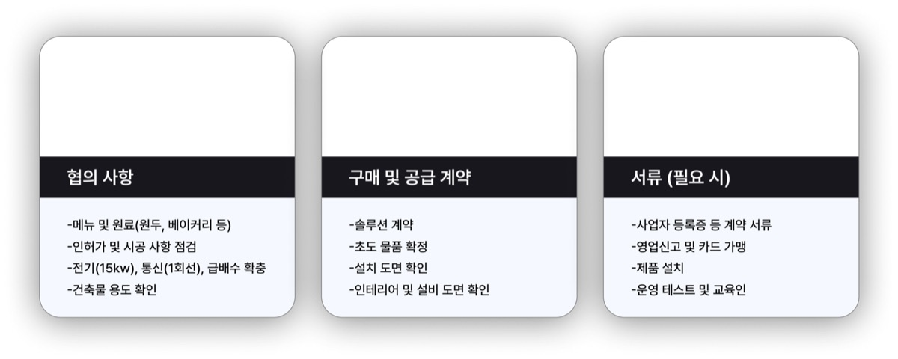
AI 로봇으로 구축하는 맞춤형 사내카페!
상담 받기